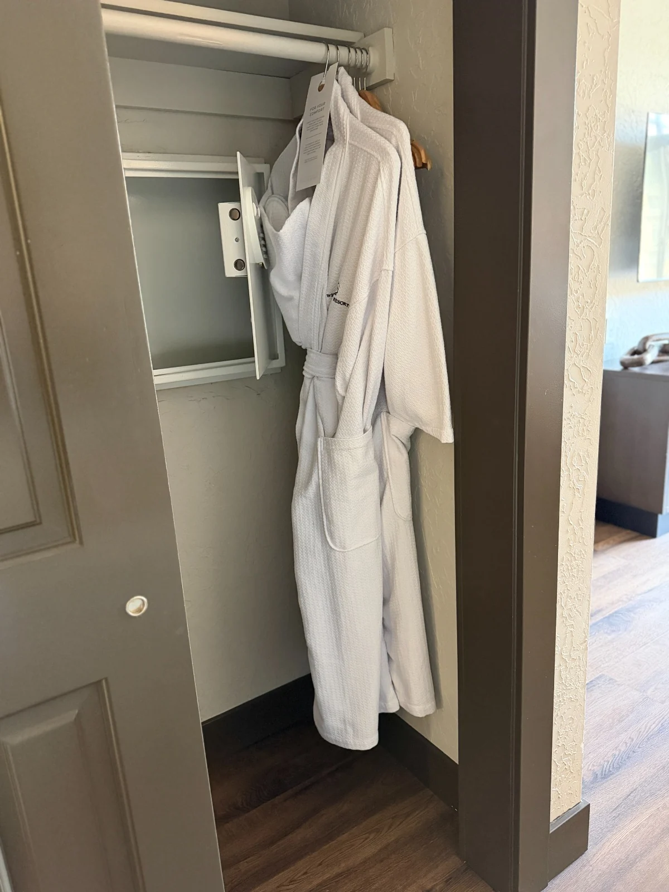

Park City sits around 7,000 feet at the base, and the skiing goes well above 9,000. If you flew in from near sea level that morning, your body has opinions about it.

Altitude is the most common reason a first ski day goes badly, and it gets blamed on jet lag, fitness or the previous night more often than on the actual cause. Knowing the numbers ahead of time is more useful than it sounds, because the numbers explain everything that follows.
The elevation numbers
Park City Mountain's summit sits at 10,023 feet. The base at Canyons Village is around 6,800 feet, and the vertical drop from the summit to the base is 3,226 feet — roughly three times the vertical of most east coast ski areas. Neither figure is especially meaningful in isolation, but the comparison against where you are coming from is.
| Location | Elevation |
|---|---|
| Salt Lake City International Airport | 4,226 ft (1,288 m) |
| Canyons Village base | ~6,800 ft (2,073 m) |
| Mountain Village base | ~6,900 ft (2,103 m) |
| Upper mountain terrain | ~9,000–9,500 ft |
| Park City Mountain summit | 10,023 ft (3,055 m) |
Salt Lake City airport sits at 4,226 feet, so the drive up the canyon adds roughly 2,500 feet of ascent before you have even unpacked. At Canyons Village you are already a mile and a half higher than the airport. Most visitors who feel nothing on the drive become aware of the altitude on the first ski run, which catches them off guard because they had already adjusted to the elevation in town. The mountain adds another 3,000 feet on top of that.
What it feels like
Mild effects are extremely common: shortness of breath on easy effort, a headache, poor sleep on the first night, waking up thirsty, and tiring faster than you expect. The breathlessness is the strangest part for fit visitors, because a blue run that felt easy at a lower resort feels harder at Park City on day one.
The underlying cause is the lower oxygen partial pressure at altitude, which means your heart and lungs have to work harder for the same output. Acclimatisation — the body gradually adjusting its red blood cell count and lung response — takes days, not hours. Children often adjust as well as adults, and fitness level predicts it less reliably than most people assume. Knowing this in advance helps you plan the first day rather than be surprised by it.
Day one to day three: the common pattern
Most visitors follow a recognisable curve at Park City elevations. The figures below are a rough guide rather than a clinical schedule.
| Day | What to expect | What helps |
|---|---|---|
| Day 1 (arrival) | Breathlessness on easy effort, headache, disrupted sleep, faster fatigue | Short session or rest: collect passes, do the grocery run, use the hot tub |
| Day 2 | Noticeably better; still tires faster than at lower altitude | Full day possible — start on easier runs before harder terrain |
| Days 3–4 | Most people are substantially adjusted | Ski normally; stay hydrated |
| Days 5–7 | Near-normal at elevation for most visitors | No change needed |
The jump from day one to day two is usually meaningful, which is exactly why protecting day one is worth the trade. Many people who arrive late afternoon and go skiing for a couple of hours feel significantly better by the next morning than they did the previous evening. The mistake is treating the first day as a full ski day and spending days two and three recovering rather than the other way around.
What actually helps
- Drink considerably more water than usual. Mountain air is dry, you lose fluid breathing, and dehydration produces most of what people blame on altitude. Start on the plane.
- Go easy on alcohol the first night. It hits harder at altitude and it worsens the sleep you were not going to get anyway.
- Make day one shorter. Half a day of skiing on arrival day beats a full one that ruins day two. If you are collecting rental equipment on arrival, that makes a natural endpoint for the first afternoon rather than trying to fit in a full session on top of travel.
- Eat properly. Appetite often drops at altitude, which leaves people underfuelled on a day of hard exercise.
- Expect a bad first night. Broken sleep at altitude is normal and it resolves within two to three nights for most people.
- Ibuprofen helps the headache. Over-the-counter ibuprofen is commonly used at altitude for the headache component, and there is reasonable evidence for it. It does not shorten your adjustment window, but it makes day one more manageable. If you are on medication that interacts with NSAIDs, take advice before you travel.
Land, do the grocery shop, collect lift passes, sit in the hot tub, eat early, sleep. Ski properly from day two. The drive up from the airport does most of the climbing for you, which is covered in getting from Salt Lake City to Park City. Planning the first morning around this rather than trying to fit a full ski day onto a travel day is the most reliable way to have a good rest of the week.
When it is more than adjustment
Severe or worsening headache, repeated vomiting, confusion, or breathlessness at rest are not normal adjustment. Those warrant descending and getting medical advice rather than waiting it out. This is uncommon at Park City elevations but it is not unheard of, particularly in visitors who arrive already exhausted or who push hard on day one despite feeling unwell.
Anyone in the group with a heart or lung condition, or who is pregnant, should take advice before a trip at this elevation rather than after arriving. Children manage altitude adjustment well on average, but they are less likely than adults to report feeling unwell. Watch for unusual fatigue, headache or irritability on day one, particularly in younger children in ski school age groups.
The sun
At altitude, on snow, the sun is far stronger than the temperature suggests. UV exposure roughly doubles for every 1,000 feet of elevation gained, and at 10,000 feet on a reflective snow surface you are receiving significantly more radiation than at the beach in summer — with cold air that makes the skin feel as though it is not being damaged.
Sunburn on day one is extremely common and entirely preventable. Face sunscreen, UV-protective lip balm and proper ski goggles belong on the packing list, not on the shopping list for day two. Sunglasses are not a substitute for goggles — the wrap-around coverage matters as much as the UV rating, and no sunglasses protect the skin around the eyes the way a goggle does. At the end of a full day on the mountain, the parts of your face the goggles did not cover will tell the story.
Common questions
How high is Park City?
The base areas sit around 6,800 to 7,000 feet, and the lifts take you well above 9,000 feet. The summit is 10,023 feet. Most visitors arrive from much lower elevations, and the drive up the canyon from the airport at 4,226 feet adds another two and a half thousand feet before you have unpacked.
Will I get altitude sickness in Park City?
Mild effects are common: breathlessness on easy effort, a headache, poor first-night sleep and tiring quickly. Most people adjust within two or three days. Severe symptoms are uncommon and need medical advice rather than waiting.
How do I adjust to altitude faster?
Drink much more water than usual starting on the flight, go easy on alcohol the first night, make the first day shorter, and eat properly even if your appetite drops. Rest on day one rather than skiing through it, and expect broken sleep the first night.
What is the summit elevation at Park City Mountain?
10,023 feet above sea level, with 3,226 feet of vertical from the summit to the base. For comparison, Salt Lake City International Airport arrives at 4,226 feet, so the drive up the canyon to Canyons Village adds roughly 2,500 feet of ascent before you have even unpacked.
Does being fit help with altitude adjustment?
Less than most people expect. Cardiovascular fitness helps you manage the extra effort of skiing at elevation, but it does not reliably shorten your adjustment window. Someone arriving from sea level who trains regularly will still feel the altitude difference on day one. Adjustment responds more to hydration, rest and time than to fitness level.
The villa this guide comes from
We own a Premier Two-Bedroom Villa inside Westgate Park City Resort, in Canyons Village. It is 1,100 square feet, two king bedrooms and two queen sleeper sofas, so it sleeps eight in one unit. Full kitchen and two bathrooms, with a short walk to the Red Pine Gondola.
Available for Presidents' Week 2027, 13 to 20 February, and for Spring Break 2027, 21 to 28 March. We rent it ourselves rather than through an agency.